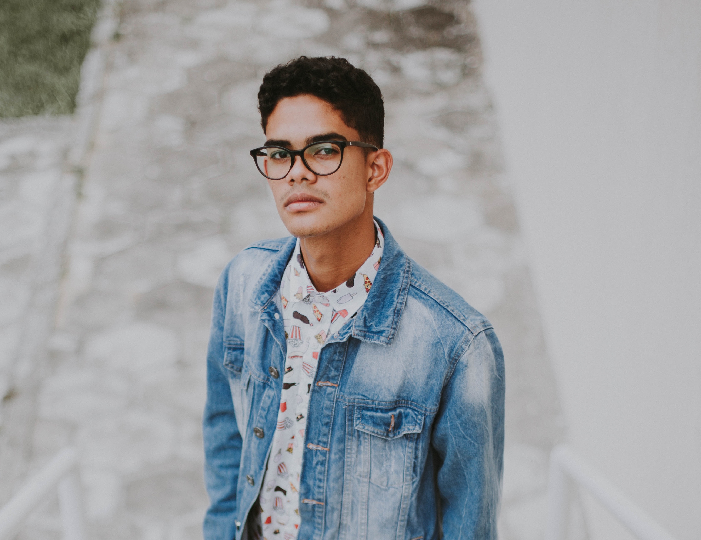

Roar Bikes
Client Brief
Client
Roar Bikes is a manufacturer of small run, contemporary bicycles sold exclusively from their own website. Roar Bikes currently have 3 models of bike to purchase (Siamese, Sphynx, Bengal)
Primary Objectives:
To build a e-commerce website for people to browse & purchase.
Target Audience:
See: Persona - Roar Cycles.pdf
Feature list (Product Requirements)
- Homepage:
- Product page for each of the bike types:
Competitors & Product Inspiration
Deliverables
Cost:
Timeline:
Persona:

- Description

- Description
Research and Interviews:
From the interviews I've discovered that the interviewees where looking for a simple site with clear options. something that is good for families as well as individuals.
Wireframe | Low Fidelity:

Wireframe | High Fidelity:

Overview:
- What I've learnt:
My use of colour is pleasing for family friendly sites, though I should have made an adult only site, I do feel that some colour would still be welcome.
Also the I think simplifying the site more would make it more appealing to adults. Also more of a feature of the Eco aspect/health benefits would have helped with the layout